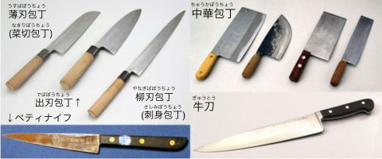
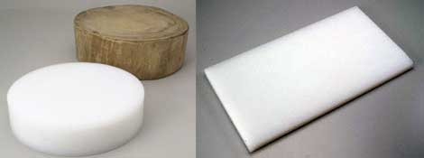
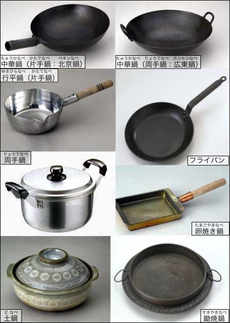
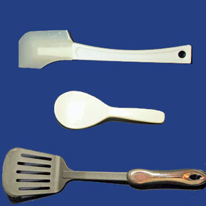
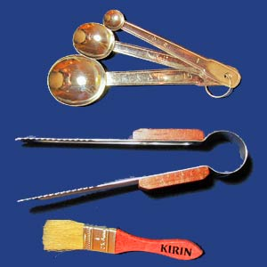
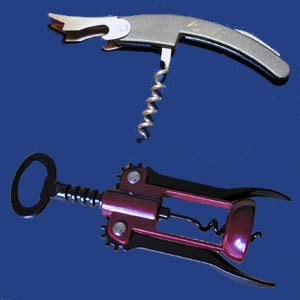
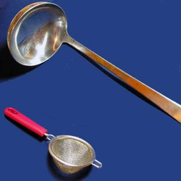

料理の基本語句
調理器具について
調理器具には、食文化の違いが反映される。ここでは、日本で使う調理器具について説明する。
包丁の種類
包丁には、いろいろな種類がある。野菜を切るときに使うのが薄刃包丁（菜切り包丁）、魚を切ったり下ろしたりするときに使うのが出刃包丁、刺身にするときに使うのが柳刃包丁（刺身包丁）である。薄刃包丁の刃の長さ（刃渡り）は20cmくらい、出刃包丁は18cmくらい、刺身包丁は24cmくらいが一般的である。このような日本の伝統的な形の包丁を和包丁という。

台湾で使われる刃が大きく重たい包丁は、中華包丁という。日本では、中華料理店などを除き、中華包丁はあまり使われていない。
西洋式の包丁は、洋包丁やナイフknifeという。洋包丁としては、牛刀が万能包丁として一般に使われている。また、果物などを切るときにペティナイフpetit knifeを使うこともある。牛刀の刃の長さ（刃渡り）は18cmから24cmくらい、ペティナイフは12cmから15cmくらいのものが一般的である。
まな板
物を切るときに下に置く板を、まな板という。日本と台湾では、一般的なまな板の形が異なる。

日本では、四角い形のものが使われる。また、まな板には木の物とプラスティックの物があるが、今ではプラスティックの物を使うことが多い。
鍋の種類

日本で使われる鍋で、もっとも一般的な形のものは、雪平鍋（行平鍋とも書く）と両手鍋である。
卵や肉を焼いたり、炒め物をつくるときには、フライパンを使うことが多い。卵焼き（だし巻き）には、専用の卵焼き鍋（卵焼き器）もある。
また、深さのあるフライパンは、揚げ物にも使う。天ぷらには、専用の天ぷら鍋がある。
中華料理で使う底の丸い鍋は、中華鍋という。最近は、炒め物などに中華鍋を使う人も増えているが、一般の家庭で使うのは片手鍋（北京鍋）が多い。
冬場の鍋料理や雑炊には、陶器の土鍋を使うことがある。すき焼きには、専用のすき焼き鍋がある。
その他の調理器具・台所用品
食べ物を擦りつぶすとき、日本では擂り鉢と擂り粉木を使う。台湾や東南アジアで使う乳鉢と乳棒は、日本では食べ物に使うことはない。
以下、いろいろな調理器具・台所用品の名前を紹介する。


(左)ゴムベラ・しゃもじ・フライ返し、(中)おろし器・ピーラー（皮むき器）・スライサー、(右)さじ・トング・はけ


(左)ワインオープナー、(右)お玉・茶こし
オクラと帆立貝（缶詰）の和え物
◇ 材料 ◇
- 帆立貝の水煮缶：１缶
- オクラ：８本
- 三杯酢（酢 ３・しょうゆ １・砂糖 １の割合で混ぜる）：大サジ２
◆ 作り方 ◆
- 三杯酢の材料を鍋にいれて沸騰させます。すぐに火を止めて、そのまま冷ましておきます。
- 帆立貝の水煮缶は、帆立貝と煮汁とに分けます。
- オクラの半分を熱湯でゆがきます。オクラを冷水にとってから、小さく切ります。
- オクラの残りの半分を包丁で細かく叩きます（粘りが出ます）。
- 三杯酢に帆立貝の水煮缶の煮汁を小サジ１〜２くらい加えます。
- 帆立貝・３・４・５をすべて混ぜあわせ、器に盛ります。冷蔵庫に入れて冷やします。
- オクラ【名詞】（おくら〔0〕）［外来語］okra
（→ 参考写真（オクラ）／→ 参考webページ）
- 帆立貝【名詞】（ほたてがい〔3〕）［※「ホタテ」と書くことも多い］
（→ 参考写真（帆立貝）／→ 参考webページ）
- 缶詰【名詞】（かんづめ〔3〕／かんづめ＿〔4〕）
- 和え物【名詞】（あえもの〔2〕／あえもの〔3〕／あえもの〔0〕）
- 水煮缶【名詞】（みずにかん〔0〕）（→ 参考写真（帆立貝柱水煮））
- 三杯酢【名詞】（さんばいず〔3〕）［※酢・醤油・砂糖を混ぜたもののこと。なお、酢と醤油を混ぜたものは二杯酢、酢と砂糖を混ぜたものは甘酢という］
- 割合【名詞】（わりあい〔0〕）
- 混ぜる【２類動詞】（まぜる〔2〕）
- 大サジ【名詞】（おおさじ〔0〕）［※「大さじ」とも書く］
- 沸騰する【３類動詞】（ふっとうする〔0〕）［関連語句：お湯が沸く、お湯を沸かす］
- 冷ます【１類動詞】（さます〔2〕）
- 煮汁【名詞】（にじる〔0〕）
- 熱湯【名詞】（ねっとう〔0〕）
- ゆがく［湯掻く］【１類動詞】（ゆがく〔2〕）［関連語句：茹でる］
- 冷水【名詞】（れいすい〔0〕）
- たたく［叩く］【１類動詞】（たたく〔2〕）
- ねばり［粘り］【名詞】（ねばり＿〔3〕）
- 小サジ【名詞】（こさじ〔0〕）［※「小さじ」とも書く］
- 混ぜあわせる【２類動詞】（まぜあわせる〔5〕）
- 器【名詞】（うつわ〔0〕）
- 盛る【１類動詞】（もる〔0〕）［関連語句：盛りつける］
- 冷蔵庫【名詞】（れいぞうこ〔3〕）
あじの竜田揚げ
◇ 材料 ◇
- アジ：２匹
- 酒：大サジ１
- しょうゆ：大サジ 1/2
- しょうがの汁：少々
- かたくり粉
- 油
◆ 作り方 ◆
- アジは三枚おろしにして小さな骨をとります。
- １に酒・しょうゆ・しょうがの汁をいれて、約15分つけておきます。
- ２の水気を切って、かたくり粉をまぶします。
- フライパンに油を入れて強火で熱します。油が160から170度くらいになったところで、火を弱くして中火にします。３を揚げます。
- アジ［鯵］【名詞】（あじ〔1〕）（→ 参考写真（アジ）／→ 参考webページ）
- 竜田揚げ【名詞】（たつたあげ〔0〕）
- しょうが［生姜］【名詞】（しょうが〔0〕）
- かたくり粉［片栗粉］【名詞】（かたくりこ〔0〕／かたくりこ〔3〕）
- 三枚おろし【名詞】（さんまいおろし〔5〕）
- つける［漬ける］【２類動詞】（つける〔0〕）
- 水気【名詞】（みずけ〔0〕）
- 水気を切る
- まぶす【１類動詞】（まぶす〔2〕）
- フライパン【名詞】（フライパン〔0〕）［外来語］fry pan
- 強火【名詞】（つよび〔0〕）［※火加減の強い方から、強火・中火・弱火・とろ火という。］【参考図 → 火加減】
- 中火【名詞】（ちゅうび〔0〕）
- 熱する【３類動詞】（ねっする〔0〕）
- 火を弱くする／↔ 火を強くする
- 揚げる【２類動詞】（あげる〔0〕）［関連語句：炒める］
※このページの写真には、自主撮影のほか、「フォトライブラリー」、「素材ページ」、「情報処理推進機構：教育用画像素材集」の素材も使用しています。各サイトへのリンクは、《連絡事項》のページにバナーを貼っています。

{kind=link}
{kind=link}
{kind=link}
{kind=link}
{kind=link}
{kind=link}
{kind=link}
{kind=link}